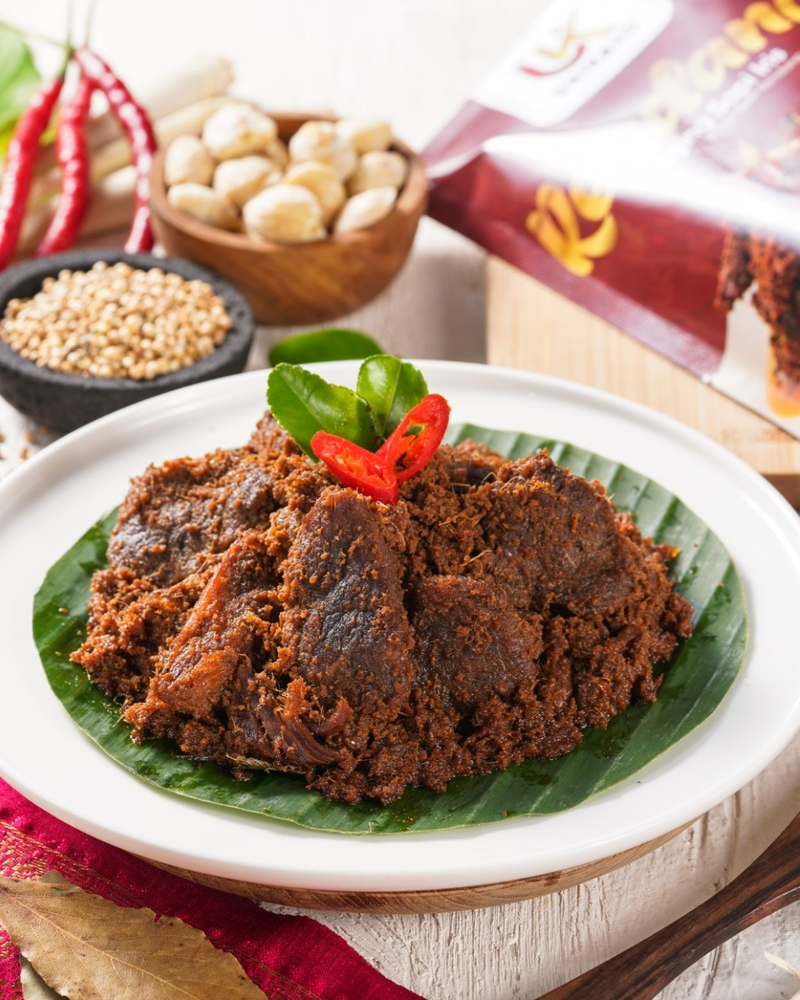

Home
Recipe
About
Creations

Rendang
Ingredients:
500g beef, cut into 5x5 cm chunks
1 turmeric leaf (or 2 Indonesian bay leaves)
15g tamarind
750 ml coconut milk containing 24% fat
2 stalks of lemongrass
4 lime leaves
Spices:
120g onions, chopped
20g garlic, chopped
125g chili, chopped and deseeded
10g ginger, chopped
30g galangal, chopped
20g candlenut, pureed
How to Make:
Pulse all the spices in a blender. Add lime leaves, lemongrass, and tamarind.
Add coconut milk. Stir fry till it becomes oily and turns brown.
Add the beef and stir.
Preheat the oven at 120°. Put all the ingredients in a bowl and cook them in the oven.
Cook for about 1.5 to 2 hours so that the beef becomes tender.
Shift the beef into a pan. Cook on a low flame and keep stirring till the color changes to dark brown and the beef becomes ultra-tender.